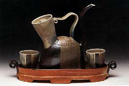
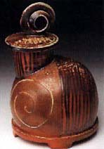
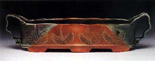
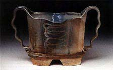
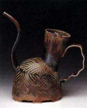
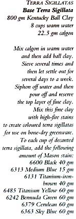
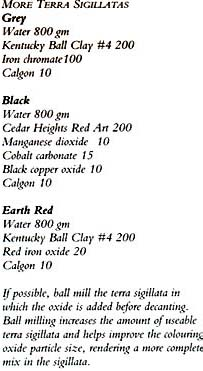

| Terra Sigillata and
Slips in Woodfiring
by Alan
Willoughby
This article was originally published by Ceramics
Technical. Reprinted by permission.
As
artists we seek the defining characteristics of our individual voices
and the techniques by which to best express this vision. Technique
by itself has little meaning. However, often in the interplay between
vision and technique we are able to take steps forward, at one moment
pushing technique to stretch our vision, and at another pushing
our vision to stretch the technique. Looking back in retrospect,
we are amazed by this evolution.

There is an exciting and diverse range of possibilities in terra
sigillatas and slips fired to high temperatures in a wood kiln.
These processes lie somewhere in the middle of the spectrum between
the natural ash glazed pots of anagama firings and the beautiful
more subtle glazed ware fired in wood kilns. In this article I discuss
the technical processes I have been working with in this ‘middle
range’, while referencing the personal and artistic issues
which have taken me on this course of investigation. Additionally,
I will attempt to place these processes within the current woodfiring
movement.
Woodfiring has become increasingly popular in the past 10-15 years.
This was witnessed at the 1999 International Woodfire Conference
held at the University of Iowa in Iowa City, Iowa, USA, with many
of the progenitors of woodfiring in both the USA and abroad attending.
It was a wonderful experience to spend several days discussing woodfiring,
making contacts and learning about the pursuits of many fine ceramic
artists. What was somewhat puzzling for me at the conference was
the dominant aesthetic focus on heavy ash build up as typical in
a classic anagama firing. However, beginning with the opening address
by Louise Cort, there was a call for discussion and exchange of
information on glazed woodfired pots and by the fourth day of the
conference the ‘Decorative Treatments: Slips and Glazes’
panel served as a catalyst for informal discussions on other woodfiring
decorative processes and were a welcome counter balance to the preponderance
of ash glazed pots.
 It
is quite natural that with increased popularity a movement such
as woodfiring becomes identified with a predominate focus. This
phenomenon is a catalyst for growth but can be somewhat misleading.
There are many other areas of exploration taking place in woodfiring
and with time I am confident that we will see an increase in the
written and visual documentation of these processes. This phenomenon
is reminiscent of the high fire reduction pots which swept this
country in the late ’50s and ’60s which with time expanded
into a wide variety of high-fire options. In retrospect such an
initially narrow focus was a part of the catalyst for change within
the ceramics movement in the US and abroad, contributing to the
vitality, growth and expansion of the studio ceramics movement.
Perhaps, with woodfiring, we are in the early stages of a change
which with time will gain a new historical significance not yet
fully comprehended. It
is quite natural that with increased popularity a movement such
as woodfiring becomes identified with a predominate focus. This
phenomenon is a catalyst for growth but can be somewhat misleading.
There are many other areas of exploration taking place in woodfiring
and with time I am confident that we will see an increase in the
written and visual documentation of these processes. This phenomenon
is reminiscent of the high fire reduction pots which swept this
country in the late ’50s and ’60s which with time expanded
into a wide variety of high-fire options. In retrospect such an
initially narrow focus was a part of the catalyst for change within
the ceramics movement in the US and abroad, contributing to the
vitality, growth and expansion of the studio ceramics movement.
Perhaps, with woodfiring, we are in the early stages of a change
which with time will gain a new historical significance not yet
fully comprehended.
Several concurrent issues sparked my interest in woodfiring. First,
I was searching for a firing process in which wet to dry surfaces
were equally pleasing and appealing to the touch, where the clay,
slips and glaze could all be a part of the surface of a piece and
have a tactile appeal. Secondly, I wanted greater involvement in
the firing process. I believe this has been a quest to develop an
understanding of the primary elements in making pots: clay, air,
water and fire. Fire transforms, fire is ritual, fire is a vital
and irreversible part of the process of making ceramics and I was
separated from it through the use of electric and gas kilns. There
is irony for me in the fact that wood has always been a part of
my life but only in the past 10 years have I become attuned to the
importance of wood in firing my pots. As a child and teenager I
was cutting wood for heat and now I have a wood stove in my home.
When I light a fire each wintry night the scent sends me back to
my most recent woodfiring and to my early childhood experiences
and thoughts of transformation and change.

Before coming to woodfiring, I had worked extensively with slips
in high temperature, mid range, and most recently, earthenware,
firing in both electric and gas kilns. Processes I was working with
included slip-trailing, multiple layering of slips and paper resist.
I was applying slips on leather-hard clay because I liked the integration
and interaction between the clay and slip that was possible when
both were pliable, including carving through the slip into the clay
and scraping the clay up into the slip(s). This process of making
and immediately decorating work requires intense concentration and
focus, and the timing of slip application on the leather-hard clay
is critical (clear glazes are applied later to bring out the color
in the slips). As I began woodfiring I wanted to simplify my slip
application methods and also take the pressure off having to decorate
the work at the time it was made. I was ready for a shift in my
studio rhythms. Adjusting my slip recipes, I began decorating on
bone-dry greenware. This allowed me to fill my studio with pots
and then focus on their surface treatment. The adjusted slips for
bone-dry clay application held and I was off and running in my first
firing of woodfired pots, combining a clay wash to enhance flashing,
painted slips, slip trailing and glazes.
The aspect of this decorating I did not like was brushing and painting
slips on the bone-dry pots. In the application of the slips there
was a chalky quality in contrast to the natural flow of slips on
leatherhard clay. Additionally, slip trailing across a painted slip
often ended with a clogged slip trailer. Just when I was about to
begin experimenting with additions to the slip recipe to improve
the methods for brushing and painting, I took another turn. On my
previous earthenware pieces I had begun working with terra sigillata
on areas of the pieces where I wanted color and a satin surface.
I was attracted to the working qualities of terra sigillatas, how
they paint on greenware, as well as the fired sheen so unique to
terra sigillata. Why not try terra sigillata in high fire? With
my first stroke of terra sigillata on a bone-dry greenware porcelain
pot I knew this was going to work.
I
have two methods for preparing terra sigillatas. The first is to
mix a large batch of OM #4 Ball Clay and, after settling, ladle
off the water on top and then pour off the fine-particled terra
sigillata. With one or two cup quantities of this base sigillata
I mix high temperature Mason Stains (see formulas). My other approach
is to mix colored terra sigillatas using different clays and adding
oxides. After leaving it to settle for several days, ladle off the
water and pour off the fine-particled terra sigillata. Depending
upon the oxides used it is sometimes a good idea to ball mill the
mix before decanting to eliminate streaking and spotting from the
oxides in the sigillata. Both methods result in terra sigillatas
that high-fire to a rich tactile surface, somewhere between a slip
and a glaze. The possibilities of color are endless. In applying
terra sigillata, I use both smaller paint brushes and sponge brushes.
It is important to apply the sigillata with a firm, distinct stroke,
returning to overlay where necessary. At the same time I don’t
belabor the application, being careful not to build up too heavy
a thickness. Remember, we are applying a wet sigillata to a dry
(greenware) pot and to achieve a strong adhesion the sigillata cannot
be too thick or it will have trouble holding on to the clay once
it dries. On top of the terra sigillatas I often use slip-trailing
to create a series of lines, outlines, symbols, marks, etc. These
colored slips are slip-trailed on the clay, on a wash over the clay
and on terra sigillata. Because of the fine particle character of
terra sigillata, slip trailing moves smoothly across the sigillata
surface.
As an artist I can’t resist decorating on a three dimensional
surface. I look forward to the exploration and risk involved in
finding the right drawing, pattern or mark(s) for the right form.
Some forms dictate a minimum of decoration and other forms reach
out for multiple images, patterns or marks. Additionally, there
are often multiple solutions to the same form and it is in the dynamic
interaction and relationship between form selection and surface
treatment where we find our individual expression. The strongest
pots bring these two components of form and surface treatment together
in a unification unique to the creator ? influenced and affected
by time and place, and the materials, forming methods and firing
processes used. The range of decorating processes I use in woodfiring
work well individually and together. I have created pots with only
a wash and glaze, pots with only terra sigillatas and slip, and
pots which include a wash, terra sigillatas, slips and glaze. In
surface treatment there is opportunity for a simple, direct statement
and the opportunity to develop a more complex multiple layered effect.

I have been firing my pots in kilns which are based on the noborigama
kiln design. My interest and pursuit of woodfiring is directly connected
to the emergence of noborigama style kilns in the US. Any type of
woodfiring is labor intensive, but these kilns are efficient, suitable
for firing in several days or one day. They have an ability to be
both responsive and forgiving, the atmosphere can be heavily reduced,
neutral or oxidized. As I become familiar with the unique nature
of the kiln and each chamber, I stack the pots according to the
desired effect sought, considering hotter and cooler locations,
heavier and lighter ash build-up, heavier to lighter reduction locations
(in a reduction firing) or neutral to oxidizing locations (in a
neutral firing). With an interest in color and the use of specific
clays, washes, slips, terra sigillatas and glazes, the firing atmosphere
becomes an important consideration. Color is influenced and affected
by reduction, neutral firing and oxidation. Along with understanding
these atmospheres to affect color, an important part of woodfiring
is learning to work with the natural flame paths which deliver ash
to the pots and create flashing on the sides of pots. This ‘mark
of the fire’ speaks of the cycles of nature and of transformation.
Flashing and ash build-up across washes, terra sigillatas, slips
and glazes can evoke a multi-dimensional world.
Woodfiring includes a broad range of surface treatments from natural
ash glazing to washes, terra sigillatas and slips to classical glazes.
Within this realm there is incredible variety to the processes and
techniques which can be explored, and through this exploration gain
knowledge of oneself and the world in which we live.
Alan Willoughby is a studio potter from southern New Jersey,
USA, and Executive Director of the Perkins Center for the Arts,
Moorestown, NJ. Photographs by John Woodin, Philadelphia, Pennsylvania,
USA.
|  |
 |
 |
© The
Author
More Articles
|